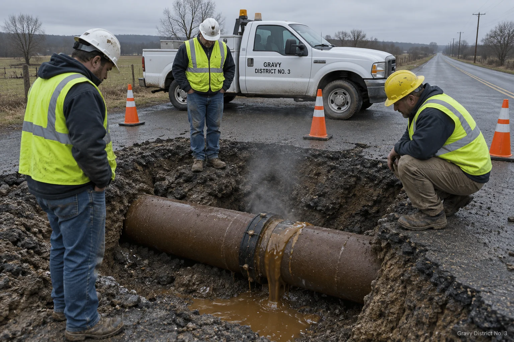
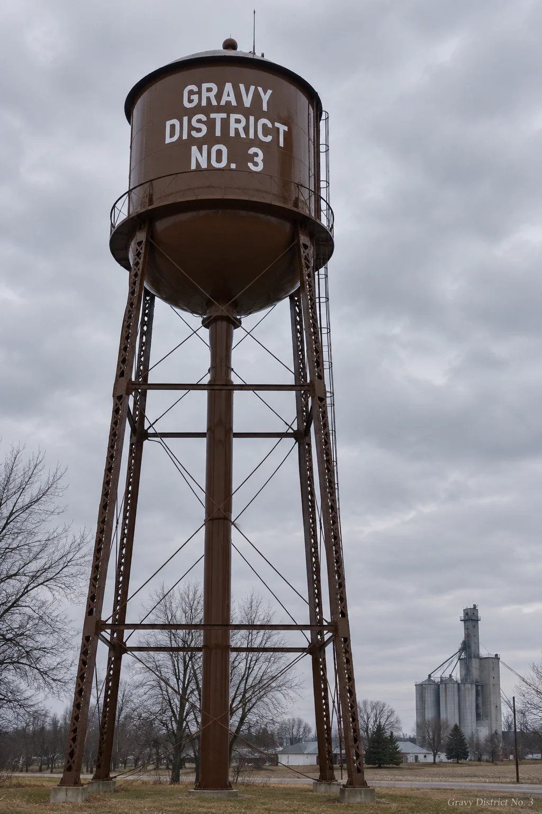

Outages & Alerts
The map below shows current service conditions across the District. It is updated whenever something changes, or when Doris gets back from lunch, whichever comes second. Tap or click an incident marker for details. To report a new problem, use the form at the bottom of this page or call the after-hours lump line at (715) 555-0163.
Live outage map
Legend: In service Reduced viscosity Full interruption Planned flush
Current incidents
| Ref. | Location | System | Condition | Customers | Estimated restoration |
|---|
Planned work
The annual spring flush of the beef system begins the third Monday of April, township by township, north to south. During the flush, beef customers may notice their gravy arrives lighter, then darker, then briefly as a broth the District does not otherwise sell. This is normal. The turkey system is flushed in October, before the surge season, for reasons the 1994 incident report explains at length.


Report an outage
Use this form for reduced viscosity, full interruptions, unusual color, unusual confidence in the flow, whistling meters, or gravy where gravy should not be. For emergencies, such as an uncontrolled release near a storm drain, call the lump line first, then fill out the form anyway, because the form is how it becomes real to the District.